|
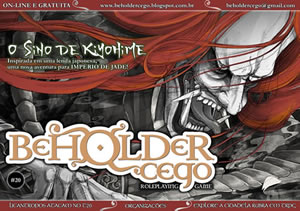
|
Beholder Cego #20
Filhos de Tenebra: crie seus próprios licantropos no novo Tormenta20. Regras simples para a construção das estatísticas (ao invés de estatísticas prontas).
O Sino de Kiyohime: uma nova aventura para Império de Jade, baseada em uma antiga lenda japonesa.
Organizações: descreva em regras suas organizações -- incluindo os benefícios de fazer parte de uma, seus deveres e suas estatísticas de jogo.
Cidadela Rubra: o fim de um arco de aventuras. O heróis devem confrontar o Culto de Aharadak e não tem noção do que vão encontrar...
Encontro Aleatório: nenhum combate, nenhuma chance de morte, mas... cuidado com os bolsos! Regras para Tormenta20.
|
|
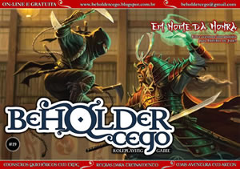
|
Beholder Cego #19
Quimeras: regras para personalizar quimeras bem diferentes e surpreender os jogadores, para Tormenta RPG.
Em Nome da Honra: aventura para personagens de 1º nível em Império de Jade.
Dia de Treinamento: regras para quando os personagens querem treinar e aumentar sua experiência.
Praga Rubra: aventura no reino de Lomatubar, para Tormenta RPG.
Encontro Aleatório: um complexo de câmaras diferente, inspirado em uma antiga aventura.
Clique aqui para fazer download do mapa das câmaras do Encontro Aleatório para uso de miniaturas.
|
|
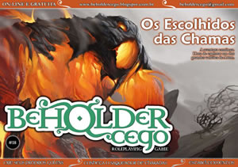
|
Beholder Cego #18
O Saqueador de Charadas: conheça um dos vilões mais icônicos de Allansia e algumas dicas sobre como inseri-lo em Tormenta.
Está Vivo! Está Vivo!: regras para que o mestre crie golens diferentes do padrão em Tormenta RPG -- e, de quebra, regras para personagens jogadores que querem criar seus próprios golens.
Olha aí, Freguesia!: usando as regras de negócios, algumas sugestões sobre como descrever as estatísticas de um estabelecimento.
Os Escolhidos das Chamas: a aventura continua. Segunda e última parte da aventura iniciada na BC#17.
Encontro Aleatório: um encontro diferente, sem monstros e sem combate -- hora de desafiar os jogadores, não os personagens!
Clique aqui para fazer download do mapa do Kurur Lianth, para a aventura Os Escolhidos das Chamas, em tamanho aumentado e com informações adicionais.
Clique aqui para fazer download do mapa do Kurur Lianth, para a aventura Os Escolhidos das Chamas, em páginas de tamanho A4 para uso de miniaturas.
|
|
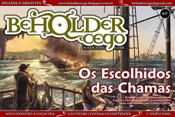
|
Beholder Cego #17
Mestres do Terror: resenha do box dos clássicos da literatura de terror: O Médico e o Monstro, Frankestein e Drácula.
Magia Viva: um novo monstro artificial para Tormenta RPG. Adaptado do living spell, material oficial da Wizards.
Roubo na Mata: mais uma aventura para Pathfinder RPG, no mesmo cenário da aventura A Maldição da Tumba (BC#16).
Desafios Selvagens!: Dicas e sugestões sobre como desafiar os jogadores sem precisar de monstros.
Os Escolhidos das Chamas: Desbrave o Mar do Dragão-Rei nesta primeira parte de uma nova aventura para Tormenta RPG.
Encontro Aleatório: Orcs aberrantes nos subterrâneos de Arton.
|
|
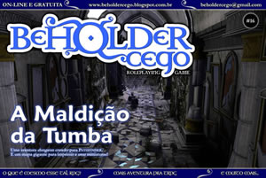
|
Beholder Cego #16
Onde Fui Amarrar Meu Burro? Um texto simples explicando um pouco o que é o RPG e os jogos OGL, foco da revista. A maioria dos leitores poderá passar reto por essas páginas...
A Morte Lhe Cai Bem. Novas versões para alguns mortos-vivos em Tormenta RPG (como o fantasma e a banshee), alguns novos mortos-vivos (como o soldado-morto e os necrodracos) e regras para personalizar um pouco seus mortos-vivos e pegar os PJ de surpresa.
A Maldição da Tumba. Aventura de 1º nível para Pathfinder. Além da aventura uma surpresa: um mapa em tamanho A2 da tumba para imprimir e jogar com suas miniaturas. E de quebra, algumas miniaturas de papel para quem não tiver suas minis. Basta clicar aqui!
Aberração Ocular. Já dizia o ditado, quem não tem beholder, caça com aberração... ou algo do tipo. Regras para criar uma aberração ocular, uma alternativa ao beholder (que é marca registrada do D&D). Regras para Pathfinder.
A Torre de Laetharell. Nesta aventura de 3º nível para Tormenta RPG os heróis precisarão descobrir o que aconteceu com Laetharell. Mas eles não fazem ideia do que vão encontrar...
Encontro Aleatório. Imagine você e seus companheiros andando pela estrada e, no meio do caminho, encontram mercenários enfrentando um urso-coruja. O que fazer? A resposta pode não ser tão óbvia quando olharem para a criatura com mais atenção...
Clique aqui para fazer download do mapa da aventura A Maldição da Tumba em tamanho A2 e do material suplementar, em tamanho A4.
Clique aqui para fazer download do mapa da aventura A Torre de Laetharell em tamanho A2.
|
|
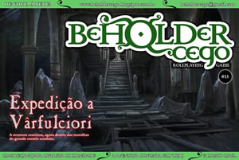
|
Beholder Cego #15
Miniaturas de RPG. Uma breve discussão sobre o uso de miniaturas em jogos de RPG, os produtos disponíveis no mercado e um grid de batalha em tamanho A4 para imprimir e jogar.
Dragões Metálicos. Depois dos dragões elementais, agora é a vez dos dragões metálicos terem suas estatísticas estampadas nas páginas da BC. Segue as regras vistas na BC#14.
Expedição a Vârfulciori. A aventura continua e agora os heróis terão que adentrar o tenebroso castelo e confrontar sua senhora. Mas muita coisa pode acontecer. De que lado será que os jogadores lutarão?
Lá e De Volta Outra Vez... Gostou da matéria sobre comunidades da BC#14? Pois tem mais! Regras para detalhar ainda mais sua comunidade, além de uma sugestão sobre como usar a regra de negócios de Valkaria: Cidade Sob a Deusa em comunidades menores.
Uma Busca Foliar. Depois de desmascarar um clérigo adorador da Tormenta, agora os heróis precisam ir para o mato para procurar... plantas?!
Encontro Aleatório. Um bando de kobolds comuns, bem simples. Se bem que aquele ali parece ter olhos demais...
|
|
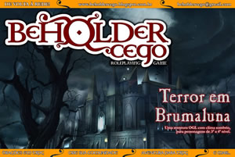
|
Beholder Cego #14
World of Warcraft. Resenha dos livros inspirados no jogo eletrônico.
Dançando com Dragões. Regras mais amplas para dragões em Tormenta RPG -- e de quebra alguns novos talentos para os monstrengos.
Terror em Brumaluna. Aventura OGL sem cenário específico, para personagens de 3º a 4º nível.
Um Bom Lugar para Viver... Regras para criação de comunidades, inspiradas nas antigas regras do D&D 3.5.
Refúgio Vermelho. Aventura para Tormenta RPG, para personagens de 1º nível.
Encontro Aleatório. Um bando de assaltantes gnolls prontos para atacar os PJ.
|
|
|
Beholder Cego #13
Tauluko. Um novo jeito de jogar RPG.
O Rei do Inverno. Resenha por Maury "Shi Dark" Abreu.
Calabouço de Hezael. Mini-cenário e aventura para Sistema d20.
Bleach. Adaptação para 3D&T.
Cuidado onde Pisa. Armadilhas em 3D&T.
|
|
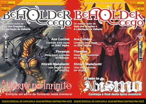
|
Beholder Cego #12
O Fim da Trilogia Tormenta. Resenha de Bruno "BURP" Schlatter.
A Harpa do Infinito. Aventura para Tormenta d20.
O Fundo do Abismo. Parte final da aventura.
Ace Combat. Combates aéreos em 3D&T.
Exploração de Florestas. Dicas para suas aventuras em florestas.
Kirath Madallantiir. Uma dragoa em busca de vingança.
|
|
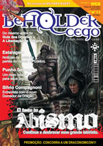
|
Beholder Cego #11
Deltora Quest. Resenha dos livros, por Jonatas Fernando "Mythos".
O Fundo do Abismo. Segunda parte da aventura.
RPG: O Verdadeiro Sentido. Uma argumentação sobre o sentido do RPG, por Tiago Lobo.
Punho Selvagem. Nova classe, por Santiago Charão.
Entrevista: Silvio Compagnino. Tiago Lobo entrevista Silvio Compagnoni, novo editor da Dragão Brasil.
|
|
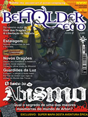
|
Beholder Cego #10
Primeira edição impressa, agora disponível apenas em pdf.
Wushu. Resenha de um novos sistema, por Bruno "BURP" Schlatter.
O Fundo do Abismo. Hora de explorar as câmaras finais d'O Abismo.
Guardiões da Luz. Ambientação para Alone in the Dark: The New Nightmare.
Novos Dragões. Novas espécies de dragão, material oficial de D&D traduzido.
|
|
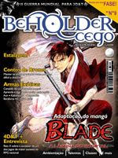
|
Beholder Cego #09
4D&T. Resenha do novo sistema e entrevista com o autor, Marcelo Cassaro.
Blade of the Imortal. Adaptação do anime para 3D&T.
Armas Exóticas. Novas armas exóticas para uso em D&D.
Segunda Guerra Mundial. Uma adaptação das batalhas para 3D&T.
De Olhos Bem Abertos. Conto adulto de Antônio Augusto Shaftiel.
|
|
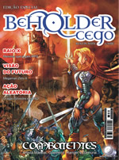
|
Beholder Cego Especial
Uma edição impressa comemorativa, distribuída gratuitamente durante o Anima Weekend em Porto Alegre, agora disponível em pdf.
Mulher, Abobrinhas e Hobbies. As mulheres e o RPG, por Priscila Veduatto.
Combatentes. Novos kits de combatentes para Sistema Daemon.
Megaman Zero 4. Adaptação dos novos reploids para 3D&T.
Dragão Silvestre. Conheça uma nova espécie de dragão para o Sistema d20.
|
|
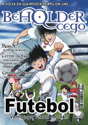
|
Beholder Cego #08
O Inimigo do Mundo. Resenha do primeiro romance de Tormenta.
Visões do Esporte. Contos de Bruno "BURP" Schlatter sobre o Magibol.
Os 11 Campeões. Regras para jogar futebol em 3D&T.
Quadril. O esporte dos bruxos de Harry Potter em D&D.
Terror na Liga. Uma aventura para Tormenta envolvendo a Liga de Magibol.
|
|
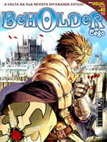
|
Beholder Cego #07
Tormenta. Resenhas dos livros Academia Arcana, Vectora e O Panteão.
Ragnarok. Uma adaptação para uso no Sistema d20.
O Filho do Sol. Conheça o filho de Azgher, para Sistema d20 e 3D&T.
Alone in the Dark. A ambientação de The New Nightmare.
|
|
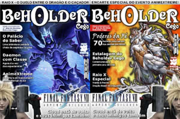
|
Beholder Cego #06
Dragão Brasil X Dragon Slayer. Qual a melhor revista de RPG? Quem vencerá?
O Palácio do Saber. Um novo local para sua aventura de Tormenta.
AnimeXtreme. Fotos do evento ocorrido em Porto Alegre.
Poderes da Fé. Novas regras para servos dos deuses em 3D&T.
Final Fantasy VII. Conheça o cenário e os personagens de um dos maiores RPGs eletrônicos.
Especialistas. Novos kits de especialistas para Sistema Daemon.
|
|
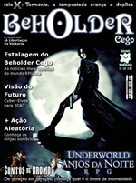
|
Beholder Cego #05
Tormenta: Daemon ou d20? Qual o melhor sistema para jogar o melhor cenário do Brasil?
Anjos da Noite. Conheça o cenário, com regras genéricas.
Gerações. Um conto de Bruno "BURP" Schlatter ambientado em Tormenta.
Cyber-Elves. Regras completas para as "fadinhas" de Megaman Zero, adaptadas para 3D&T.
Shinobi. Uma nova classe de prestígio para Sistema d20.
|
|
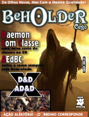
|
Beholder Cego #04
Masmorras e Dragões. Os 30 anos de D&D.
Daemon com Classe. Novos kits de personagens para Sistema Daemon.
Ephyrea. Mais que um mundo, uma galáxia! Conheça esse novo cenário.
Estalagem do Beholder Cego. Entre e fique à vontade para conhecer o estalajadeiro e seus colegas.
|
|
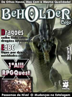
|
Beholder Cego #03
Novo formato, novo visual, novas seções. Tudo novo na Beholder.
Estalagem do Beholder Cego. Uma nova sessão: notícias do mundo do RPG.
Dragões. Detalhes sobre como eles são no cenário Tormenta.
Primeira Aventura vs RPGQuest. Qual o melhor sistema para começar a jogar?
Força para 3D&T. Kits de personagens de Star Wars para 3D&T.
Dragão Marinho. Estatísticas completas desses monstrengos para o Sistema d20.
|
|
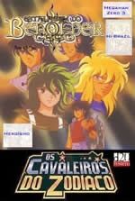
|
Beholder Cego #02
Os Cavaleiros do Zodíaco. Uma adaptação dos guerreiros santos para o Sistema d20.
Hi-Brazil. Conheça o cenário de Daemon inspirado no nosso próprio país.
Pontos Heróicos. Como aproveitá-los ao máximo no Sistema Daemon.
Aventuras Fantásticas. Conheça o mundo de Allansia e além.
|
|
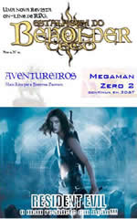
|
Beholder Cego #01
Resident Evil. Uma adaptação para o sistema Ação!!!.
Megaman Zero 2. A segunda parte da adaptação para 3D&T Turbo.
Aventureiros. Mais kits de personagem para o Sistema Daemon.
|
|
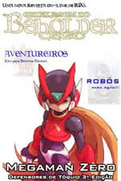
|
Beholder Cego #00
Edição de lançamento da revista Beholder Cego.
Megaman Zero. Uma adaptação para 3D&T Turbo.
Robôs. Criando robôs e androides no Sistema d20.
Aventureiros. Novos kits de personagem em Sistema Daemon.
|